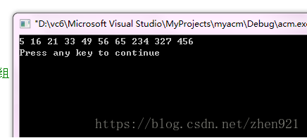

基数排序的排序原理不难理解，但是在算法设计上，个人感觉还是比那些常见的排序要难的，耐心慢慢一步步理解，还是比较容易看懂的，注意基数排序有两种，一种是高位优先，一种是低位优先，在这里我只讲低位优先，即先排个位，再排十位……….
基数排序的时间复杂度为O (nlog(r)m)，其中r为所采取的基数，而m为堆数
排序数字为16,21,5,49,33,456,327,56,65,234
这是我测试的实例数字，下面有源程序，最高位有三位（程序里max=3）,所以要进行三遍排序（下图只排了两次，第三遍也一样啦），第一遍，以个位数分桶，个位相同放在一个桶里，然后把桶里的数在依次拿出来，第一次拿出，顺序为21，33，234，5，65，16，456，56，327，49 同理第二遍以十位数字比较，把第一遍拿出的数字再放进桶中，三次循环得到结果。
| 个位数是（第一遍） | 桶 |
|---|---|
| 0 | - |
| 1 | 21 |
| 2 | - |
| 3 | 33 |
| 4 | 234 |
| 5 | 5, 65 |
| 6 | 16, 456, 56 |
| 7 | 327 |
| 8 | - |
| 9 | 49 |
| 十位数是（第二遍） | 桶 |
|---|---|
| 0 | 5 |
| 1 | 16 |
| 2 | 21,327 |
| 3 | 33，234 |
| 4 | 49 |
| 5 | 456，56 |
| 6 | 65 |
| 7 | - |
| 8 | - |
| 9 | - |
该排序实例，是按部就班的按照桶来放的，但是由于在排序过程中用到的桶是二维数组，因此造成一定的资源浪费，但二维数组前一个数字表示桶号，后一个表示放的位置，极大的降低了理解难度，因为每个桶内放的个数是用count数组存储，便于从桶内相应位置取出数字。
该排序实例，是按部就班的按照桶来放的，但是由于在排序过程中用到的桶是二维数组，因此造成一定的资源浪费，但二维数组前一个数字表示桶号，后一个表示放的位置，极大的降低了理解难度，因为每个桶内放的个数是用count数组存储，便于从桶内相应位置取出数字。
#include<iostream>
using namespace std;
int max(int date[],int n){//此函数用于求解所给数组中最大数有几位
int max=0;
for(int i=0;i<n;i++){
int count=1,tem=date[i];
while(tem/10!=0){//计算每个数的位数，用count计数
tem=tem/10;
count++;
}
if(count>max)
max=count;//把最大位数赋值max
}
return max;
}
void basesort(int date[],int n){
int maxx=max(date,n);//取得最大位数
int num=1;
for(int i=0;i<maxx;i++){//位数决定排序循环次数
int count[10];//声明count为了统计每个桶放了几个数
int temp[10]['n'];//temp相当于桶，前一个数标记第几个篮子，后一个为了标记放的个数
for(int f=0;f<10;f++){//对声明数组初始化
count[f]=0;
}
for(int g=0;g<10;g++){//对声明数组初始化
for(int z=0;z<n;z++){
temp[g][z]=0;
}
}
for(int j=0;j<n;j++){
int fg=date[j]/num;//num是变量，因为每次循环比较的位是不同的
int k=fg%10;
count[k]++;
int te=count[k]-1;
temp[k][te]=date[j];//把数据放k桶的te位上存储
}
int b=0;
for(int h=0;h<10;h++){
if(count[h]>0){//h>0说明h桶内有数字存储
for(int v=0;v<count[h];v++){//count[h]是h桶的存储个数
date[b]=temp[h][v];//把桶内排好的数全都倒给要排序的数组，进行下轮排序
b++;
}
}
}
num=num*10;
}
}
void print(int date[],int n){//打印排好序的数组
for(int i=0;i<10;i++){
cout<<date[i]<<" ";
}
cout<<endl;
}
int main() {
int date[10]={16,21,5,49,33,456,327,56,65,234};
basesort(date,10);
print(date,10);
return 0;
}